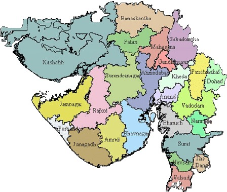

| Name: | Gujarat |
|---|---|
| Capital: | Gandhinagar |
| Language: | Gujarati |
| Chief Minister: | Bhupendra Patel |
| Total Districts: | 33 |
| Population: | ~60 million (as per 2011 census) |
| Formation: | 1 May 1960 |
| Area: | 196,024 km² (6th largest in India) |
| Borders: | Madhya Pradesh, Maharashtra, Rajasthan, Dadra and Nagar Haveli, Arabian Sea |
| Coastline: | ~1,600 km along the Arabian Sea |
Know more